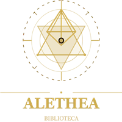
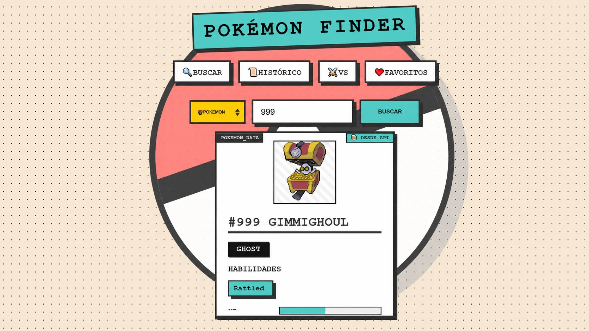

En curso
Licenciatura en Desarrollo y Gestión de Software
Universidad Tecnológica de Panamá
- Desarrollo web y móvil
- Diseño y gestión de bases de datos
- Programación orientada a objetos
Hola, soy Kenneth
Estudiante de Desarrollo y Gestión de Software con experiencia académica en aplicaciones web, móviles y de escritorio. Convierto problemas en productos útiles, paso a paso.

Sobre mí
Me interesa crear software que se entienda, funcione bien y resuelva una necesidad real.
Durante mi formación he trabajado en proyectos web, aplicaciones Android, soluciones con API y sistemas conectados a bases de datos. Cada proyecto me ha enseñado a analizar mejor, organizar el código y probar antes de entregar.
También cuento con experiencia complementaria en telecomunicaciones y mantenimiento técnico, una base que fortaleció mi atención al detalle y mi forma práctica de resolver problemas.
Analizo el problema y sus necesidades.
Organizo una solución clara y alcanzable.
Construyo de forma ordenada y gradual.
Pruebo, corrijo y sigo mejorando.
Formación y herramientas
Formación universitaria acompañada de proyectos reales en diferentes plataformas.
En curso
Universidad Tecnológica de Panamá
Una selección de aplicaciones web, móviles y de escritorio desarrolladas durante mi formación.
Plataforma web
Plataforma para descubrir y gestionar anime, películas y series con autenticación, recomendaciones, favoritos, comentarios, administración y estadísticas.

Aplicación Android
Aplicación móvil para administrar una biblioteca: catálogo, préstamos, favoritos y perfiles de usuario con almacenamiento local.
Mi participación: perfil, préstamos, catálogo, favoritos, detalle de libros y colaboración en la base de datos.
Aplicación web · Proyecto académico
Sistema para gestionar recetas y usuarios mediante una arquitectura separada. La interfaz MVC consume una Web API usando solicitudes HTTP y datos JSON.

Aplicación web
Buscador y comparador de Pokémon conectado a PokeAPI, con caché local, historial de búsquedas, favoritos y una experiencia visual de estilo brutalista.
Más experiencia práctica
Aplicación móvil
Gestión de clientes, productos y órdenes con cálculos automáticos y persistencia local.
Sistema web
Registro, autenticación y seguimiento de solicitudes para un área de Recursos Humanos.
Sistema web
Aplicación organizada en modelos, vistas y controladores para procesos contables.
Contacto
Estoy disponible para conversar, aprender y colaborar en soluciones que generen valor.